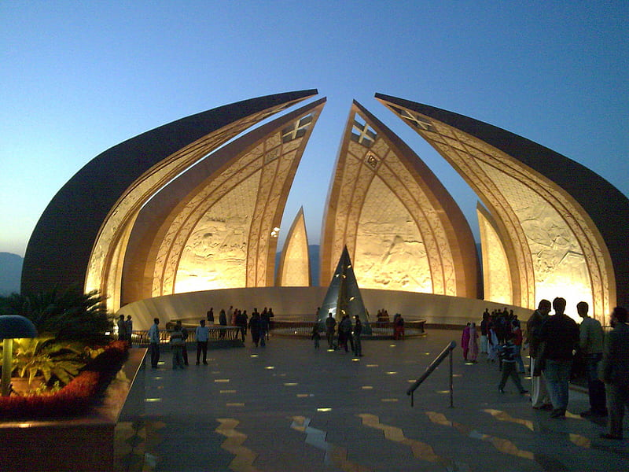
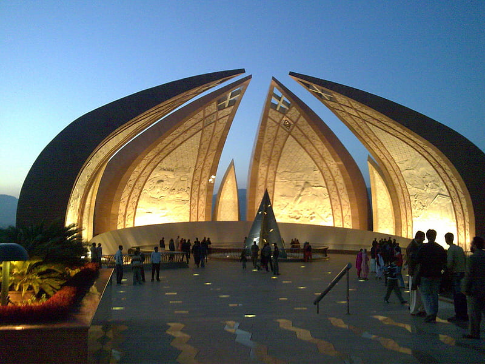
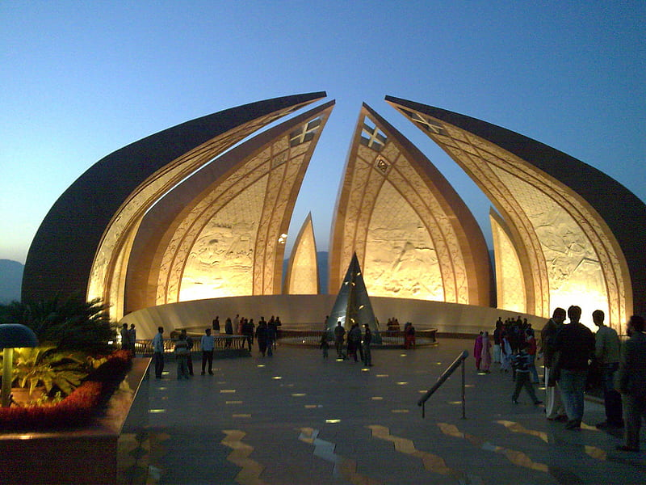

Symbols of National Pride
 


6th September: A day to remember the bravery and sacrifices of our soldiers.
6th September is celebrated to commemorate the sacrifices made by the Pakistan Army during the Indo-Pak War of 1965. On this day, we honor the bravery of those who defended our homeland.
"There is no power on earth that can undo Pakistan." – Muhammad Ali Jinnah

Captain Raja Muhammad Sarwar was awarded the Nishan-e-Haider for his bravery in the 1948 Indo-Pak war. He led his unit fearlessly and laid down his life defending the homeland.
Major Aziz Bhatti, Nishan-e-Haider recipient, fought bravely during the 1965 war. His leadership and courage in the Battle of Burki earned him the highest military honor.

Major Tufail Muhammad, another Nishan-e-Haider hero, displayed exceptional courage in combat. His bravery and sacrifice during the Indo-Pak war continue to inspire generations.

Havildar Lalak Jan laid down his life during the Kargil War in 1999. His steadfastness in the face of extreme adversity made him a national hero and the recipient of the Nishan-e-Haider.

Pilot Officer Rashid Minhas was posthumously awarded the Nishan-e-Haider for sacrificing his life to prevent the hijacking of his aircraft during a training flight. He was the youngest and the only PAF officer to receive this honor.

Major Shabbir Sharif, awarded the Nishan-e-Haider, displayed exceptional bravery during the 1971 war. He led his troops fearlessly in battle, achieving significant victories before laying down his life.

Naik Saif Ali Janjua was awarded the Hilal-e-Kashmir, equivalent to Nishan-e-Haider, for his fearless defense of Kashmir during the Indo-Pak War. His leadership and sacrifice are remembered with great pride.